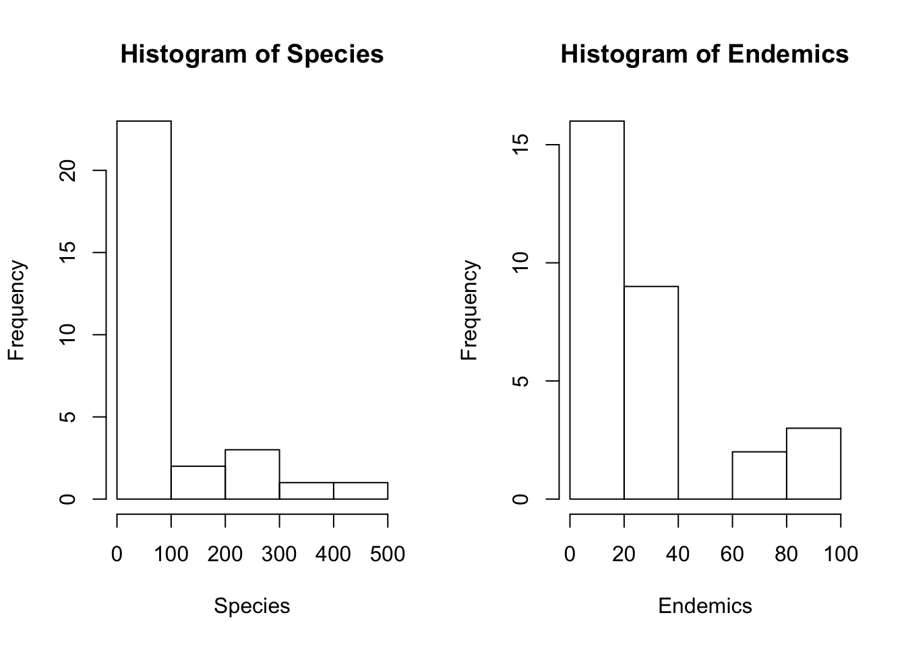

gala
zhengzihaosqs
2019-10-20
Last updated: 2019-10-20
Checks: 7 0
Knit directory: HW3/
This reproducible R Markdown analysis was created with workflowr (version 1.4.0). The Checks tab describes the reproducibility checks that were applied when the results were created. The Past versions tab lists the development history.
Great! Since the R Markdown file has been committed to the Git repository, you know the exact version of the code that produced these results.
Great job! The global environment was empty. Objects defined in the global environment can affect the analysis in your R Markdown file in unknown ways. For reproduciblity it’s best to always run the code in an empty environment.
The command set.seed(20191020) was run prior to running the code in the R Markdown file. Setting a seed ensures that any results that rely on randomness, e.g. subsampling or permutations, are reproducible.
Great job! Recording the operating system, R version, and package versions is critical for reproducibility.
Nice! There were no cached chunks for this analysis, so you can be confident that you successfully produced the results during this run.
Great job! Using relative paths to the files within your workflowr project makes it easier to run your code on other machines.
Great! You are using Git for version control. Tracking code development and connecting the code version to the results is critical for reproducibility. The version displayed above was the version of the Git repository at the time these results were generated.
Note that you need to be careful to ensure that all relevant files for the analysis have been committed to Git prior to generating the results (you can use wflow_publish or wflow_git_commit). workflowr only checks the R Markdown file, but you know if there are other scripts or data files that it depends on. Below is the status of the Git repository when the results were generated:
Ignored files:
Ignored: .Rproj.user/
Note that any generated files, e.g. HTML, png, CSS, etc., are not included in this status report because it is ok for generated content to have uncommitted changes.
These are the previous versions of the R Markdown and HTML files. If you’ve configured a remote Git repository (see ?wflow_git_remote), click on the hyperlinks in the table below to view them.
| File | Version | Author | Date | Message |
|---|---|---|---|---|
| html | 6903fce | zhengzihaosqs | 2019-10-20 | Build site. |
| Rmd | ff6d1f9 | zhengzihaosqs | 2019-10-20 | Simple linear regression |
| html | f83da16 | zhengzihaosqs | 2019-10-20 | Build site. |
| html | 3676c2b | zhengzihaosqs | 2019-10-20 | Build site. |
| Rmd | 3a5cfea | zhengzihaosqs | 2019-10-20 | Analyze the gala dataset |
Introduction
At first, we input data from local csv file for further analysis.
library(readr)
mydata <- read.csv("MyData.csv")
mydata X Species Endemics Area Elevation Nearest Scruz Adjacent
1 Baltra 58 23 25.09 346 0.6 0.6 1.84
2 Bartolome 31 21 1.24 109 0.6 26.3 572.33
3 Caldwell 3 3 0.21 114 2.8 58.7 0.78
4 Champion 25 9 0.10 46 1.9 47.4 0.18
5 Coamano 2 1 0.05 77 1.9 1.9 903.82
6 Daphne.Major 18 11 0.34 119 8.0 8.0 1.84
7 Daphne.Minor 24 0 0.08 93 6.0 12.0 0.34
8 Darwin 10 7 2.33 168 34.1 290.2 2.85
9 Eden 8 4 0.03 71 0.4 0.4 17.95
10 Enderby 2 2 0.18 112 2.6 50.2 0.10
11 Espanola 97 26 58.27 198 1.1 88.3 0.57
12 Fernandina 93 35 634.49 1494 4.3 95.3 4669.32
13 Gardner1 58 17 0.57 49 1.1 93.1 58.27
14 Gardner2 5 4 0.78 227 4.6 62.2 0.21
15 Genovesa 40 19 17.35 76 47.4 92.2 129.49
16 Isabela 347 89 4669.32 1707 0.7 28.1 634.49
17 Marchena 51 23 129.49 343 29.1 85.9 59.56
18 Onslow 2 2 0.01 25 3.3 45.9 0.10
19 Pinta 104 37 59.56 777 29.1 119.6 129.49
20 Pinzon 108 33 17.95 458 10.7 10.7 0.03
21 Las.Plazas 12 9 0.23 94 0.5 0.6 25.09
22 Rabida 70 30 4.89 367 4.4 24.4 572.33
23 SanCristobal 280 65 551.62 716 45.2 66.6 0.57
24 SanSalvador 237 81 572.33 906 0.2 19.8 4.89
25 SantaCruz 444 95 903.82 864 0.6 0.0 0.52
26 SantaFe 62 28 24.08 259 16.5 16.5 0.52
27 SantaMaria 285 73 170.92 640 2.6 49.2 0.10
28 Seymour 44 16 1.84 147 0.6 9.6 25.09
29 Tortuga 16 8 1.24 186 6.8 50.9 17.95
30 Wolf 21 12 2.85 253 34.1 254.7 2.33This dataset describe some information about species diversity on the Galapagos Islands, the first column is the names of the island, and for other columns their meanings are:
Species:–the number of plant species found on the island
Endemics:–the number of endemic species
Area:–the area of the island (km\(^2\))
Elevation:–the highest elevation of the island (m)
Nearest:–the distance from the nearest island (km)
Scruz:–the distance from Santa Cruz island (km)
Adjacent:–the area of the adjacent island (square km)
We show descriptive statistics for Species and Area:
summary(mydata$Species) Min. 1st Qu. Median Mean 3rd Qu. Max.
2.00 13.00 42.00 85.23 96.00 444.00 sd(mydata$Species)[1] 114.6331summary(mydata$Endemics) Min. 1st Qu. Median Mean 3rd Qu. Max.
0.00 7.25 18.00 26.10 32.25 95.00 sd(mydata$Endemics)[1] 27.33111Information about mean, median, the minimum and maximum value, quantile points and standard deviation for two columns are shown above.
Now we are going to add plots to reveal more feature of these two columns.
par(mfrow=c(1,2))
hist(mydata$Species,main="Histogram of Species",xlab="Species")
hist(mydata$Endemics,main="Histogram of Endemics",xlab="Endemics")
We plot two histograms to show the distributions of two columns, but we can not see much information from histograms. So we decide plot a scatterplot to show the relationship between two columns.
par(mfrow=c(1,1))
plot(mydata$Species,mydata$Endemics,main="Scatterplot of Species and Endemics",xlab="Species",ylab="Endemics")
We can see a positive correlation between them.
Now we run a simple linear regression to estimate the relationship between Endemics and Species
lmd<-lm(Endemics~Species,mydata)
slmd<-summary(lmd)
slmd
Call:
lm(formula = Endemics ~ Species, data = mydata)
Residuals:
Min 1Q Median 3Q Max
-14.1469 -3.9305 -0.3517 3.3289 19.7692
Coefficients:
Estimate Std. Error t value Pr(>|t|)
(Intercept) 6.37028 1.52539 4.176 0.000262 ***
Species 0.23148 0.01079 21.443 < 2e-16 ***
---
Signif. codes: 0 '***' 0.001 '**' 0.01 '*' 0.05 '.' 0.1 ' ' 1
Residual standard error: 6.664 on 28 degrees of freedom
Multiple R-squared: 0.9426, Adjusted R-squared: 0.9406
F-statistic: 459.8 on 1 and 28 DF, p-value: < 2.2e-16From the summary information of the regression result, we see that the p-value for intercept and species is 2.615663510^{-4} and 6.472637810^{-19}, which means the covariate and intercept terms are significant.
The estimated value of intercept is 6.3702808 and the estimated value of Species is 0.2314789. We add the fitted line to the scatterplot:
plot(mydata$Species,mydata$Endemics,main="Scatterplot of Species and Endemics")
abline(lmd)
| Version | Author | Date |
|---|---|---|
| 6903fce | zhengzihaosqs | 2019-10-20 |
We can see that the linear model fits the data well.
sessionInfo()R version 3.6.1 (2019-07-05)
Platform: x86_64-apple-darwin15.6.0 (64-bit)
Running under: macOS Catalina 10.15
Matrix products: default
BLAS: /Library/Frameworks/R.framework/Versions/3.6/Resources/lib/libRblas.0.dylib
LAPACK: /Library/Frameworks/R.framework/Versions/3.6/Resources/lib/libRlapack.dylib
locale:
[1] en_US.UTF-8/en_US.UTF-8/en_US.UTF-8/C/en_US.UTF-8/en_US.UTF-8
attached base packages:
[1] stats graphics grDevices utils datasets methods base
other attached packages:
[1] readr_1.3.1
loaded via a namespace (and not attached):
[1] Rcpp_1.0.2 knitr_1.25 whisker_0.4 magrittr_1.5
[5] workflowr_1.4.0 hms_0.5.1 R6_2.4.0 rlang_0.4.0
[9] stringr_1.4.0 tools_3.6.1 xfun_0.9 git2r_0.26.1
[13] htmltools_0.3.6 yaml_2.2.0 rprojroot_1.3-2 digest_0.6.21
[17] tibble_2.1.3 crayon_1.3.4 vctrs_0.2.0 fs_1.3.1
[21] zeallot_0.1.0 glue_1.3.1 evaluate_0.14 rmarkdown_1.15
[25] stringi_1.4.3 compiler_3.6.1 pillar_1.4.2 backports_1.1.4
[29] pkgconfig_2.0.3